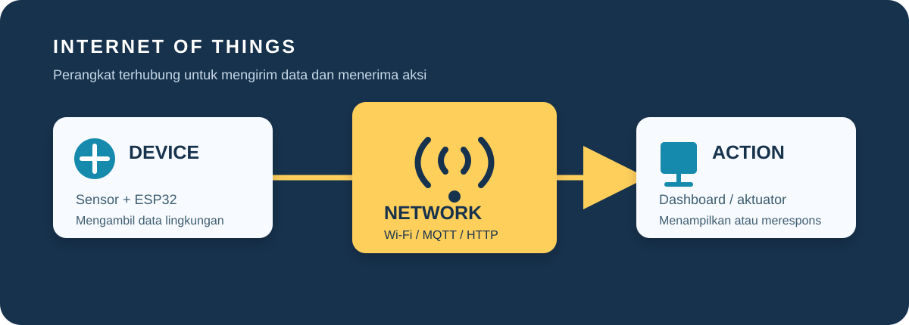

Apa itu IoT dan bagaimana aliran datanya?
Internet of Things atau IoT adalah cara menghubungkan benda fisik ke jaringan agar benda tersebut dapat mengumpulkan, mengirim, dan menerima data.

Empat bagian utama IoT
Sebuah sistem IoT biasanya dimulai dari sensor. Sensor suhu, cahaya, kelembapan, atau jarak membaca kondisi di dunia nyata. Mikrokontroler kemudian mengolah hasil bacaan itu dan mengirimkannya melalui Wi-Fi atau jaringan lain.
Data dapat diteruskan ke server atau cloud untuk disimpan dan dianalisis. Dari sana, perintah dapat dikirim kembali ke perangkat. Aktuator seperti relay, servo, dan motor menjalankan perintah tersebut.
Penerapan IoT dalam kehidupan sehari-hari
IoT dapat ditemukan pada rumah, pertanian, industri, kesehatan, dan transportasi. Di rumah, lampu dan kipas dapat dikendalikan berdasarkan jadwal atau keberadaan pengguna. Di pertanian, sensor membantu memantau kelembapan tanah sehingga penyiraman dilakukan hanya ketika dibutuhkan. Pada industri, sensor getaran dan suhu dapat memberi peringatan sebelum mesin mengalami kerusakan.
Walaupun contoh produknya berbeda, pola kerjanya tetap serupa: perangkat mengumpulkan data, jaringan memindahkan data, sistem mengolahnya, lalu pengguna atau aktuator mengambil tindakan. Nilai IoT bukan hanya pada kemampuan terhubung ke internet, tetapi pada keputusan yang menjadi lebih cepat dan berdasarkan data.
Hubungan IoT dengan teknik komputer
Teknik komputer berperan dalam hampir setiap lapisan IoT. Pada sisi perangkat keras, mahasiswa mempelajari rangkaian sensor, catu daya, GPIO, dan komunikasi seperti I2C atau UART. Pada sisi perangkat lunak, mereka menulis program mikrokontroler, mengatur pertukaran data, dan membuat antarmuka pemantauan.
IoT juga mempertemukan sistem embedded, jaringan komputer, basis data, dan keamanan informasi. Karena itu, perancang tidak cukup hanya membuat sensor terbaca. Ia perlu memikirkan format data, kestabilan koneksi, autentikasi, pembaruan program, serta cara melindungi data pengguna.
Alur kerja penyiram tanaman otomatis
Untuk prototipe pertama, gunakan sensor kelembapan tanah, ESP32, modul relay, dan pompa kecil. Pastikan pompa memakai catu daya yang sesuai dan jangan menghubungkan beban besar langsung ke pin GPIO.
| Input | Sensor kelembapan tanah |
|---|---|
| Pengolah | ESP32 atau Arduino Uno |
| Komunikasi | Wi-Fi, MQTT, atau HTTP |
| Output | Modul relay dan pompa air |
Tahapan membuat prototipe IoT
Mulai dengan merumuskan masalah dan menentukan data yang benar-benar diperlukan. Setelah itu, buat diagram blok yang menunjukkan sensor, mikrokontroler, jaringan, server, dan aktuator. Uji setiap bagian secara terpisah sebelum menggabungkannya agar sumber kesalahan lebih mudah ditemukan.
Ketika perangkat sudah berjalan, lakukan pengujian pada kondisi normal dan kondisi gangguan, misalnya Wi-Fi terputus atau sensor menghasilkan nilai tidak wajar. Tambahkan batas aman, pencatatan error, dan mode manual jika alat mengendalikan pompa, pemanas, atau beban listrik.
Hal penting untuk pemula
Mulailah dari jaringan lokal sebelum memakai cloud. Uji sensor di Serial Monitor, tampilkan data di dashboard sederhana, lalu tambahkan aktuator setelah pembacaan stabil. Dengan urutan ini, kesalahan lebih mudah dilacak.